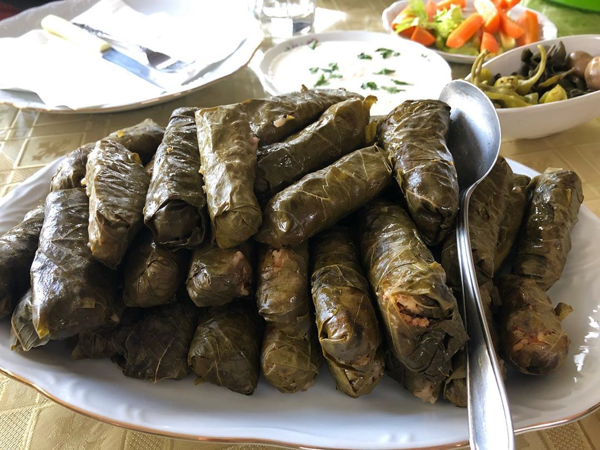

Koupepia: Cypriot Stuffed Vine Leaves
Koupepia (as we call them in Cyprus) are dolmades stuffed with ground pork or veal, rice, fresh herbs and seasoning, cooked with tomato and lemon juice.
Koupepia (as we call them in Cyprus) are dolmades stuffed with ground pork or veal, rice, fresh herbs and seasoning, cooked with tomato and lemon juice.
Wash the fresh vine leaves and blanch them for 5 minutes. Add cold water and drain. If using jarred brined grape leaves, wash, rinse and drain them.
In a skillet heat half of the olive oil and sauté the onion until translucent. Add the ground meat and sauté until it turns white. Add half of the tomato and half of the lemon juice and cook for 5 minutes stirring once in a while.
Mix in the remaining ingredients and set aside to cool.
Put a leaf on a plate, vein side facing up, remove stem and put about a tbsp of the mixture near the stem.
Neatly fold left edge and then right edge and then roll all the way.
Wrap up into a cigar shape (don’t fold too tight as the rice will expand during cooking).
Repeat with the remaining grape leaves and filling.
Place neatly in the pot seam side facing down, starting from the edge, moving in a circle towards the centre. Second and third layers may be placed on top.
Add the remaining tomato, olive oil as well as lemon juice and then cover them with a plate (which must be about the size of the pot).
Finally add water to cover the plate and bring to a boil, Cover with the lid, reduce heat and simmer for about 30 - 35 minutes.
Allow to rest for a while before serving.
Serve with Greek yoghurt.